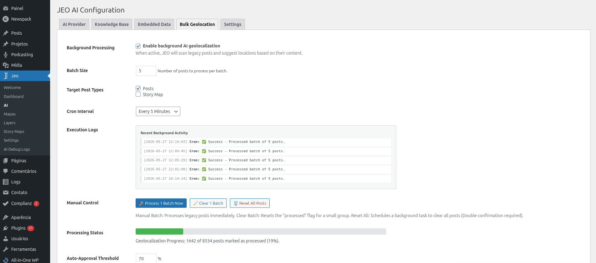
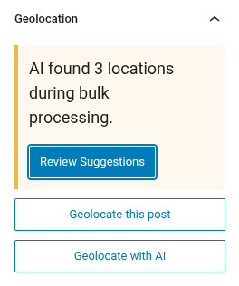
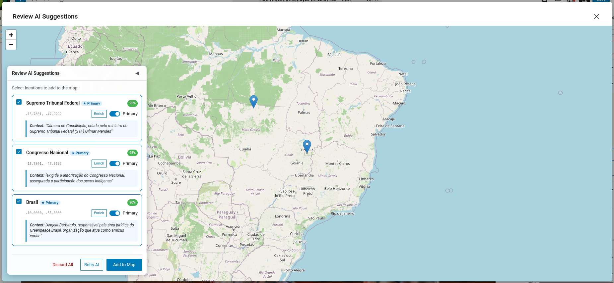

AI Bulk Geolocation
Bulk Geolocation allows you to georeference many posts at once using AI. This is useful when you have a large archive of posts that were not geolocated when first published.
How it works
The Bulk Geolocation system processes posts in batches using WordPress cron (WP-Cron). It selects posts that do not have geolocation data (_related_point meta) and sends them to the AI for analysis.
Setting up
- Configure an AI provider in Jeo → AI (see AI Settings).
- Go to the Bulk Geolocation tab in Jeo → AI.
- Select the post types to process, set the confidence threshold, and configure the batch size.
- Start the bulk process.

Processing
Once started, the system processes posts in the background:
- Each batch selects posts without geolocation data and sends them to the AI.
- A JEO AI Status column appears in the WordPress admin post list, showing the georeferencing status for each post.
- Processed posts are marked for review — they are not published automatically.
Reviewing results
After processing, you can review the AI-suggested geolocation for each post:
- Go to the post list and look for posts with a "pending review" AI status.
- Click on a post to open the editor.
- The Geolocation sidebar will show the AI-suggested points.
- Approve or adjust the points as needed.


You can also use the bulk action on the WordPress post list (edit.php) to approve multiple posts at once. Select the posts, choose Approve JEO AI Geolocations from the bulk actions dropdown, and a preview modal will appear showing each post's suggested locations, confidence scores, and an approve/reject action.
Monitoring
- Jeo → AI Debug Logs: View token usage, provider, and model for each AI call.
- The Bulk Geolocation tab shows the current batch progress and any errors encountered.
Requirements
- An AI provider must be configured.
- Posts must have title and/or content for the AI to analyze.